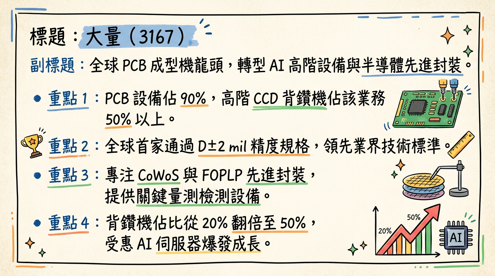
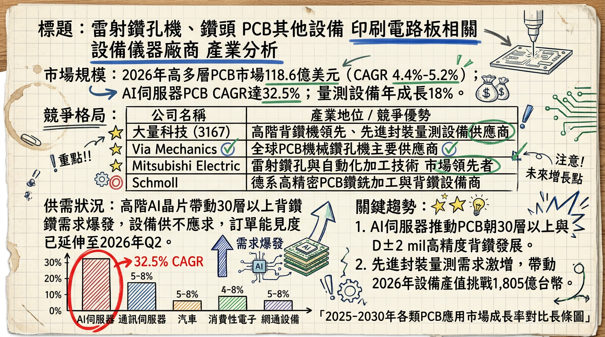
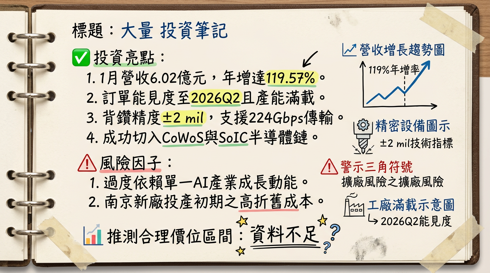

3167 大量 深度研究報告：AI 伺服器與先進封裝雙引擎，邁向獲利倍增期
日期： 2026 年 03 月 02 日
研究員： 頂尖台股研究分析師
評等： 買進 (Buy)
目標價： 230 - 280 元
## 一句話摘要
大量科技（3167）憑藉全球首創 D±2 mil 精度背鑽技術卡位 NVIDIA Rubin 供應鏈，並成功由 PCB 設備商轉型為半導體先進封裝量測大廠，2026 年獲利有望挑戰歷史新高（EPS 預估 10.1 元）。
## 公司概覽
大量科技為全球 PCB 成型機龍頭，目前已成功轉型為 AI 伺服器高階設備與半導體先進封裝量測設備供應商。
營收結構（2025-2026 預估）
| 業務類別 | 營收佔比 | 核心產品 | 應用領域 |
|---|
| PCB 相關設備 | 90% | 高階 CCD 背鑽機、成型機 | AI 伺服器（20層以上高多層板） |
| 半導體設備 | 10% | TM4 厚度量測儀、FOPLP 翹曲量測、AOI 檢測 | CoWoS、SoIC、FOPLP 先進封裝 |
| 其餘服務 | <1% | 售後維修與零件 | 既有客戶維護 |
## 核心競爭優勢
高精度技術壁壘： 全球首家通過 D±2 mil 精度規格要求的廠商，配備自製 CNC 控制器與 StubMapper™ 閉環系統，解決 224 Gbps 高速傳輸的訊號干擾問題。
半導體國產替代： 內層厚度量測儀（TM4）已打入美系 GPU 大廠與台系晶圓代工龍頭，逐步取代美系/以系昂貴設備。
垂直整合能力： 具備自製控制器開發能力，能針對客戶特殊需求（如玻璃基板 GCS）進行快速客製化開發。
## 財務分析
近 6 個月月營收趨勢表
| 月份 | 營收金額 (億元) | 月增率 (MoM) | 年增率 (YoY) | 備註 |
|---|
| 2026/01 | 6.02 | +7.53% | +119.57% | 單月歷史新高 |
| 2025/12 | 5.59 | +13.98% | +61.02% | 南京新廠開始貢獻 |
| 2025/11 | 4.91 | -1.58% | +53.42% | 穩定出貨期 |
| 2025/10 | 4.99 | +4.11% | +54.98% | |
| 2025/09 | 4.79 | -0.68% | +73.30% | |
| 2025/08 | 4.82 | +6.33% | +113.06% | |
年度獲利趨勢
- 2024 年（實際）： 營收 25.99 億元，EPS 1.48 元。
- 2025 年（實際營收/EPS預估）： 營收 50.78 億元（+95.4%），EPS 預估 7.83 - 8.14 元。
- 2026 年（法人預估）： 營收挑戰 90 億元，EPS 預估 10.1 元。
## 法說會重點（2026/02/06）
- 訂單能見度： 官方確認訂單已排至 2026 年 Q2，部分高階機台交期拉長至 6 個月。
- 產能 Guidance： 南京新廠 2026/Q1 量產，總月產能提升至 300-350 台。
- 技術方向： 針對 2026 年量產的 NVIDIA Rubin 世代，大量已具備對應之高精度背鑽技術，預期高階背鑽機出貨量從 2025 年的 485 台成長至 600 台以上。
## 券商觀點
| 券商名稱 | 報告日期 | 評等 | 目標價 | 2026 EPS 預估 |
|---|
| 福邦投顧 | 2025/12/09 | 買進 | 280 元 | 9.50 - 10.0 元 |
| 法人研究機構 | 2026/01/21 | 正向 | 230 元 | 9.20 元 |
| 凱基/永豐金 | 2025/08/18 | 持有 | 170 元 | (過時資料) |
## 財報深度分析
利潤率趨勢表
| 季度 | 毛利率 (%) | 營業利益率 (%) | 稅後淨利率 (%) | 營運亮點 |
|---|
| 2025 Q3 | 39.14% | 20.55% | 15.20% | 高階背鑽機佔比達 50% |
| 2025 Q2 | 38.86% | 18.20% | 13.80% | 產能利用率滿載 |
| 2025 Q1 | 32.45% | 11.50% | 10.60% | 轉型初期效益顯現 |
- 存貨分析： 2025 Q3 存貨週轉天數降至 162 天（2023 年約 300 天），顯示去化健康，目前高存貨主要為因應 2026 上半年的強勁訂單。
- 資本支出： 2025 年為高峰，南京新廠投入後，2026 年將進入產出收割期，現金流轉趨豐沛。
## 股權異動與資本結構
- 可轉換公司債 (CB)： 「大量一」(31671) 於 2025/08 掛牌，規模 5 億元，轉換價 170 元。目前股價遠高於轉換價，預期將面臨約 5-8% 的股本稀釋壓力。
- 申報轉讓： 2026/02/09 經理人宋漢釧贈與轉讓 5 張，對市場影響微乎其微。
- 內部人信託： 2025/07 集體信託轉讓，推測為員工認股規劃，並非賣壓信號。
## 產業分析
全球高階 PCB 設備競爭格局
| 公司名稱 | 國別 | 技術地位 | 2026 競爭焦點 |
|---|
| Schmoll | 德國 | 全球龍頭 | 頂級歐美板廠首選，價格極高 |
| 大量科技 | 台灣 | 高階背鑽領導者 | 性價比高、D±2 mil 認證、在地服務 |
| Via Mechanics | 日本 | 載板設備強項 | 專注於日本及高端載板市場 |
| 志聖 | 台灣 | 壓膜/烘烤設備 | 與大量在 CoWoS 領域有協作關係 |
## 近期催化劑
1.
3/10 前公告 2 月營收：若淡季不淡（>5億元），將進一步確認 2026 成長趨勢。
2. 美系 GPU 客戶追加量測訂單：TM4 量測儀若在 CoWoS 產線滲透率提升，將拉高毛利。
3. 配息政策公告：EPS 突破 8 元後，2026 年股利可望大幅優於去年（0.999元）。
1.
地緣政治：中國生產基地受出口管制之潛在風險。
2. CB 稀釋壓力：轉換價格 170 元與現價差距大，短期可能有賣壓。
## ⭐ 成長動能時間軸
- 2025/12：南京新廠正式投產，解決產能瓶頸。
- 2026/Q1：南京廠全面量產，1 月營收衝上 6.02 億元創歷史新高。
- 2026/Q2：AI 伺服器板（Rubin 世代）訂單放量，高精度背鑽機進入交付高峰。
- 2026/H2：半導體量測設備營收佔比挑戰 15%-20%，FOPLP 翹曲量測機台進入 OSAT 廠（如日月光、力成）驗收期。
- 2026/年底：玻璃基板（GCS）設備開發完成，為 2027 年下一波成長動能鋪路。
## 2026 展望
* AI 伺服器系統板層數從 12 層增至 40 層，背鑽機需求「質與量」齊揚。
* 先進封裝（CoWoS/SoIC）擴產商機。
* AI 資本支出若放緩，高階設備拉貨動能可能轉弱。
* 人民幣匯率波動影響大陸獲利匯回。
## 投資結論
轉型效益爆發： 大量已脫離傳統低毛利 PCB 設備競爭，轉向 AI 高階背鑽與半導體量測。
獲利體質改善： 毛利率由 31% 躍升至 39%，2026 年 EPS 有望站上 10 元門檻。
產能擴充到位： 南京新廠解決過去「有單無產能」的窘境。
建議目標價區間： 參考同業（如志聖、迅得）PE 評價，給予 22-25 倍本益比，目標價設定於 230 - 280 元，分批佈局。
本報告由 AI 自動產生，資料來源為公開網路資訊，僅供參考，不構成投資建議。產生時間：2026-03-02 19:21
📊 資訊卡


